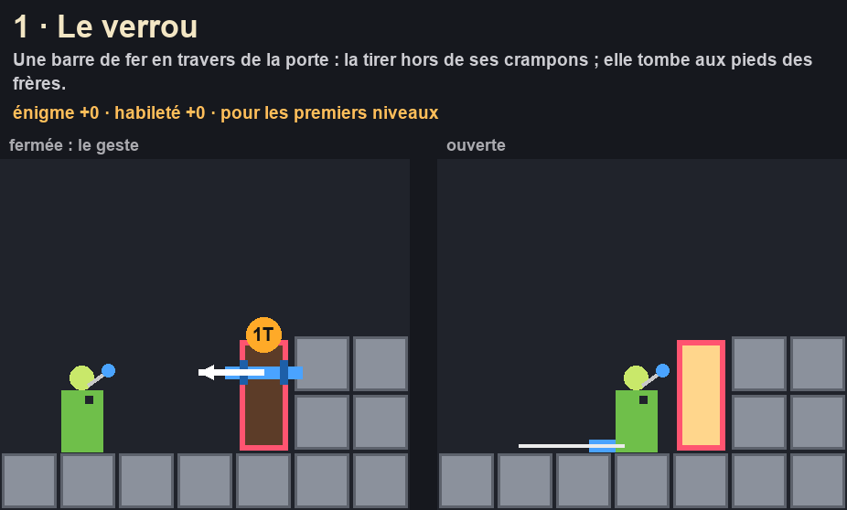
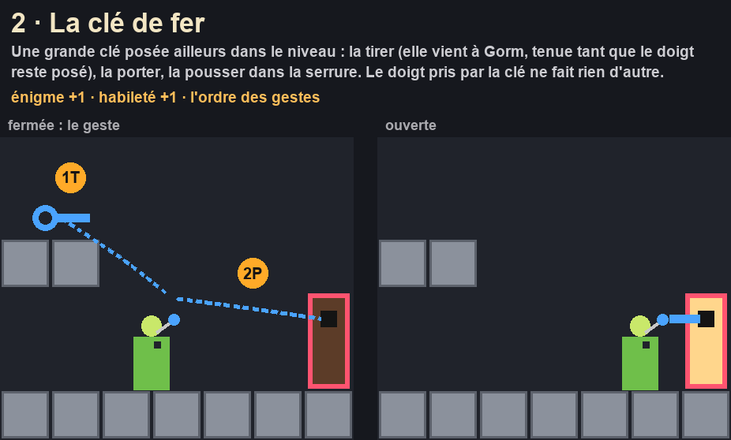
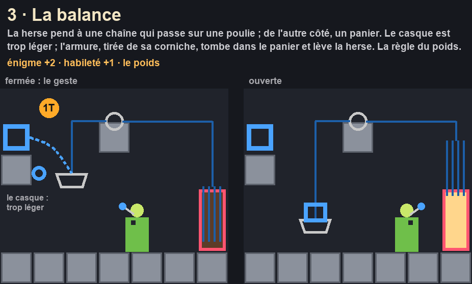
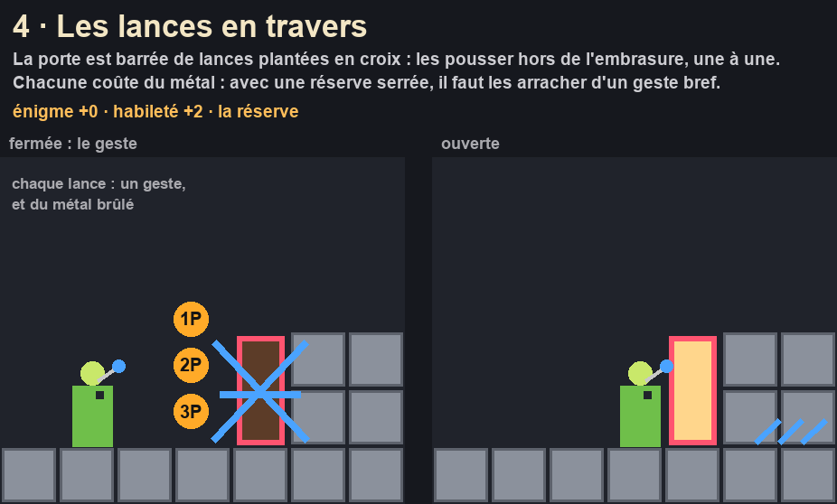
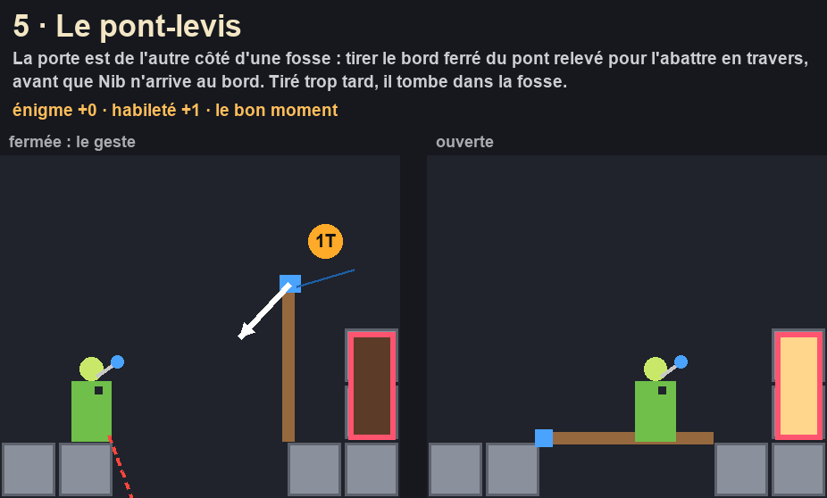
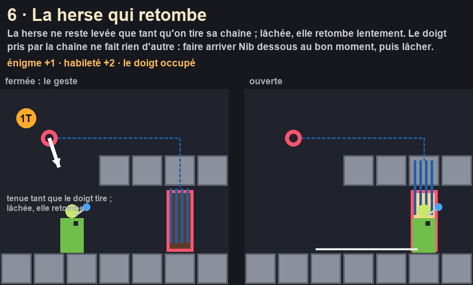

Ce qui ouvre la porte : 6 mécanismes
« Tu as aussi le droit d'en avoir plusieurs pour varier, ça peut augmenter la difficulté » (Florian, 09/10). Chacun : la porte fermée et le geste, puis ouverte ; ce qu'il ajoute à l'énigme et à l'habileté.
Ta réponse, par numéros : ceux que tu gardes. Ma recommandation : 1, 2, 3, 6 — le verrou pour les premiers niveaux, puis la clé (l'ordre des gestes), la balance (le poids : c'est notre concept) et la herse qui retombe (le doigt occupé, le bon moment). Le 4 et le 5 recoupent ce que la réserve et les envols demandent déjà.





